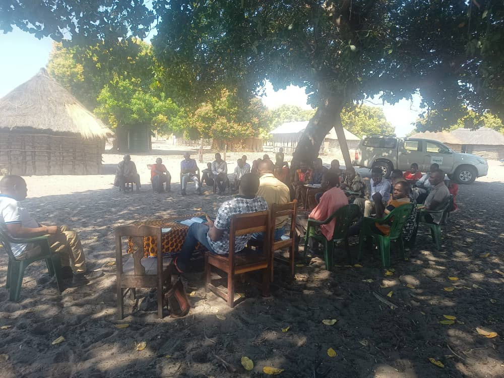

Transforming Landscapes, Empowering Communities
Creating measurable change across the Barotse rangelands through community-led restoration and sustainable development.
Creating measurable change across the Barotse rangelands through community-led restoration and sustainable development.
We combine community-led restoration, improved livestock management, and rigorous monitoring to create resilient landscapes and stronger rural livelihoods.

Thousands of households see improved incomes, resilience, and opportunity.
Restored rangelands, increased soil carbon, and richer biodiversity.
"The training in rotational grazing has transformed how we manage our cattle. Our animals are healthier, and we're seeing the grasslands recover."

"As women in the community, we now have more say in land management decisions. The project has created new opportunities for our families."
"As women in the community, we now have more say in land management decisions. The project has created new opportunities for our families."
Donors and partners can help scale restoration across Zambia's rangelands. For funding or partnership inquiries, please visit our Funding page.
The project area includes Mongu, Limilunga, Nalolo, Senanga, Sioma districts in Zambia's Western Province, spanning 1.2 million hectares.
Markers show district-level project presence. Locations are approximate and labelled by district.